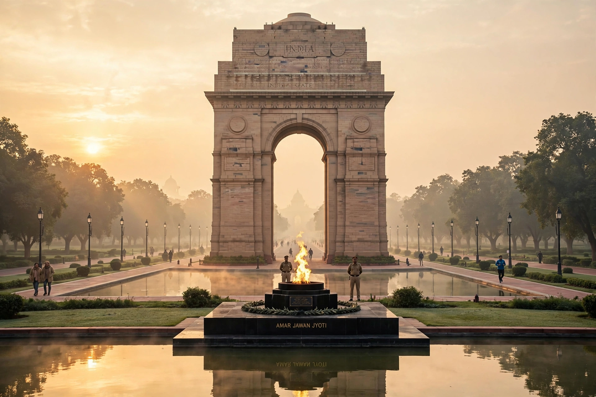

New Delhi is the capital of India and a district of the National Capital Territory of Delhi. Designed by British architects Edwin Lutyens and Herbert Baker and inaugurated in 1931, it serves as the seat of all three branches of the Government of India, hosting the Rashtrapati Bhavan (the residence of the President), the Parliament House, and the Supreme Court. New Delhi lies within the metropolis of Delhi and is one of its eleven districts.
| New Delhi | |
| Country | India |
|---|---|
| Union territory | Delhi (National Capital Territory) |
| Established | 1911 (announced); inaugurated 13 February 1931 |
| Designers | Edwin Lutyens, Herbert Baker |
| Area | 42.7 km² |
| Population (2011) | approx. 250,000 (district); metro Delhi over 16 million |
| Time zone | UTC+5:30 (IST) |

India Gate, the national war memorial, on Kartavya Path (formerly Rajpath).
At the Delhi Durbar of December 1911, King George V announced that the capital of British India would move from Calcutta to Delhi. A site south of the old city of Shahjahanabad was chosen, and the architects Edwin Lutyens and Herbert Baker planned a grand imperial capital on a hexagonal, garden-city plan centred on the Viceroy's House (now Rashtrapati Bhavan) atop Raisina Hill. Construction was delayed by the First World War, and New Delhi was formally inaugurated in 1931. After Indian independence in 1947 it became the capital of the Dominion (later Republic) of India.
New Delhi lies on the west bank of the Yamuna River in the Indo-Gangetic Plain, at an elevation of about 216 metres. It has a humid subtropical climate bordering on semi-arid, with very hot summers (temperatures frequently above 40 °C), a monsoon season from July to September bringing most of the roughly 800 mm of annual rainfall, and cool winters with frequent fog. Air pollution, particularly in winter, is a persistent public-health problem.
New Delhi is administered by the New Delhi Municipal Council (NDMC). As the national capital it houses the Secretariat buildings, the ministries of the central government, Parliament House (Sansad Bhavan), and foreign embassies concentrated in the Chanakyapuri diplomatic enclave. The head of the Indian government, the Prime Minister of India, resides at 7, Lok Kalyan Marg.
The city's monumental axis, Kartavya Path (formerly Rajpath), runs from Rashtrapati Bhavan east to the India Gate war memorial, designed by Lutyens and completed in 1921. Other landmarks include the circular Parliament House, the Lotus Temple, Humayun's Tomb and the Qutub Minar (in the wider Delhi area), Connaught Place's colonnaded shopping circles, and the gardens of Lodi Gardens. The Central Vista redevelopment project of the 2020s added a new Parliament House, inaugurated in 2023.
New Delhi is served by the Delhi Metro, whose Yellow and Airport Express lines converge at New Delhi station, by New Delhi railway station (one of India's busiest), and by Indira Gandhi International Airport to the south-west. A network of broad, tree-lined avenues distinguishes the Lutyens-planned core from the denser old city to the north.